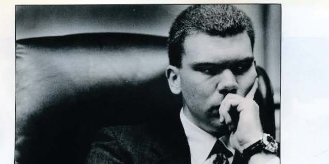

#
Michael Colvin elected Associated Student Government president
Colvin won the Associated Student Government's presidential election, the Herald reported under the headline "Michael Colvin Aces Associated Student Government Election."
Associated Students · academic year

Elected Associated Student Government president in results the Herald reported on 19 April 1990; the 1991 Talisman independently confirms him as Associated Student Government President for that year.
Michael Colvin won the Associated Student Government presidential election in results the Herald reported on 19 April 1990 under the headline "Michael Colvin Aces Associated Student Government Election." The 1991 Talisman independently lists him as Associated Student Government President for 1990-91.
In office, the Herald reported ASG considering a four-day class week (7 February 1991) and covered concern inside the organization over a change affecting student insurance (15 January 1991).
The archive does not preserve further detail of how the term ended or what Colvin did afterward.
Colvin took office in August 1990, introduced by the Herald as a new leader who wanted to make ideas reality. He had been active in the organization at least since September 1989, when he signed a Herald piece soliciting help for ASG.
His spring 1991 agenda was the widest of the era: in a single February week ASG moved to cap tuition boosts, proposed overhauling the Detrex registration system, and planned lobbying to protect student financial aid.
Letters he signed under Resolution 91-7-S survive in the SGA records, pressing administrators Kemble Johnson and Debby Cherwak for improvements to Detrex Field.
Legislative records fill out the year beyond what the Herald's brief items captured. In fall 1990 the body introduced bills for a roundtable of student organization presidents (Bill #90-2-F) and for microwaves in the cafeterias (Bill #90-4-F). On 29 November 1990 it passed Resolution 90-10-F asking for a left-handed desk in every classroom, and killed Resolution 90-12-F, which had asked that absences tied to Iben Browning's widely publicized New Madrid Fault earthquake prediction be excused; no earthquake came. In the spring the Senate suspended and amended its own by-laws in a short cluster of bills, including Bill #91-6-S changing the procedure for overriding a presidential veto - a procedure tested weeks later when the emergency-kit resolution survived a veto on 14 March 1991. The spring term also produced a resolution asking the university to improve Detrex Field, the intramural field, and bills on joining the Hilltopper Athletic Foundation, recognizing presidential scholars in the Herald, and a book exchange board for Grise Hall.
Sources for this account
Everything the archive holds on Michael Colvin, gathered on one page.
Everyone the record shows in office this year. Each name goes to their own page, with every office they held and everything the archive says they did.
The treasurer's seat was vacant when the year opened; candidates spoke at the meeting of 11 September 1990 and Rob Evans won the floor election. In February 1991 he asked Congress for ideas on how to appropriate the money left in the ASG budget.
ASG Minutes, 11 Sep 1990 and 12 Feb 1991Read the list of vacant Congress seats at every meeting and chased committees and organizations for their written reports. She had earlier worked on getting more evening classes through the Academic Affairs committee.
ASG Minutes, 28 Aug 1990 and 12 Feb 1991Met committee heads individually, drove the recycling programme that she reported should be solidly started by the end of November 1990, and discussed the possibility of one or two more co-ed dormitories with Dave Parrott. She was elected president for 1991-92.
ASG Minutes, 16 Oct 1990 and 12 Feb 1991Resigned in January 1991: a new part-time university staff job made him ineligible under the ASG constitution. He had been ASG president in 1989-90.
Herald 66:33, 17 Jan 1991, "Two Associated Student Government Officers Step Down"Resigned in January 1991, citing his workload. Karl Miller was picked to fill the office two weeks later.
Herald 66:33, 17 Jan 1991, "Two Associated Student Government Officers Step Down"Picked to fill the public relations vice presidency after Gott and Hodge stepped down.
Herald 66:33, 17 Jan 1991Accepted as Parliamentarian by motion on 11 September 1990.
ASG Minutes, 11 Sep 1990One of the five-member Judicial Council accepted by Congress on 28 August 1990. He had been ASG treasurer the previous year.
ASG Minutes, 28 Aug 1990One of the five-member Judicial Council accepted by Congress on 28 August 1990.
ASG Minutes, 28 Aug 1990 ASG Minutes, 5 Feb 1991 Herald 66:54, 11 Apr 1991, "No Offense Intended" PDFOne of the five-member Judicial Council accepted by Congress on 28 August 1990. She had been ASG secretary the previous year.
ASG Minutes, 28 Aug 1990One of the five-member Judicial Council accepted by Congress on 28 August 1990.
ASG Minutes, 28 Aug 1990Approved as one of two Student Affairs chairmen on 28 August 1990, with Ty Craig.
ASG Minutes, 28 Aug 1990Approved as one of two Student Affairs chairmen on 28 August 1990, with Roxana Crowe.
ASG Minutes, 28 Aug 1990 Herald 67:18, 29 Oct 1991, "Heather Falmlen Allegations Disgrace to Associated Student Government" PDFApproved as one of two Public Relations chairmen on 28 August 1990, serving alongside the public relations vice president.
ASG Minutes, 28 Aug 1990Approved as chairman of Legislative Research on 28 August 1990.
ASG Minutes, 28 Aug 1990 ASG Minutes, 5 Mar 1991 Herald 66:53, 9 Apr 1991, "Heather Falmlen Shines" PDFApproved as chairman of Academic Affairs on 28 August 1990. He had been accepted as Ogden College Alternate in February 1990.
ASG Minutes, 28 Aug 1990Colvin won the Associated Student Government's presidential election, the Herald reported under the headline "Michael Colvin Aces Associated Student Government Election."
The same Herald issue that reported Colvin's election win reported the Associated Student Government was seeking an increase to the student activity fee.
Herald 65:55, 19 Apr 1990, "Associated Student Government Wants Activity Fee Raised"
The Herald introduced Michael Colvin as the new ASG leader who wanted to make ideas reality. The profile opened the organization's year in the second issue of the fall.
The Associated Student Government introduced Bill #90-2-F, proposing a roundtable of student organization presidents.
SGA Legislation, Bill #90-2-F, "Organizational Presidents Roundtable"
The Associated Student Government introduced Bill #90-4-F, requesting that microwaves be placed in campus cafeterias.
ASG cut the budget of the WKU Glasgow associated student body. The move came a year after the main campus organization had helped Glasgow change its constitution.
Associated Student Government raffled tickets at a dollar apiece outside Downing University Center in early November for a chance to serve as WKU president for a day. Nashville sophomore Jeff Goff won and, accompanied by ASG President Michael Colvin, took over President Thomas Meredith's office on 15 November 1990, using the day to raise students' concerns with the administration while Meredith took on Goff's class schedule.
The Associated Student Government killed Resolution 90-12-F, which had asked that student absences tied to Iben Browning's widely publicized forecast of a major New Madrid Fault earthquake be excused. Browning had predicted the quake for on or near 3 December 1990; it prompted regional anxiety and some school closures, but no earthquake occurred. The Herald reported the resolution's defeat in its 29 November 1990 issue.
SGA Legislation, Resolution 90-12-F, "Excused Absences for Earthquake Prediction"
The Associated Student Government passed Resolution 90-10-F, requesting that a left-handed desk be provided in each classroom. In the same stretch of meetings it killed a companion resolution on excused absences. The Herald reported both in its issue of 29 November 1990, closing out the fall legislative calendar.
SGA Legislation, Resolution 90-10-F, "Left Handed Desks"Herald 66:27, 29 Nov 1990
The Associated Student Government passed Bill #91-3-S, providing for ASG membership in the Hilltopper Athletic Foundation.
SGA Legislation, Bill #91-3-S, "ASG to Join Hilltopper Athletic Foundation"
In the spring term the Associated Student Government passed a cluster of by-law bills: Bill #91-4-S suspended the by-laws to allow a vote on a pending matter, Bill #91-5-S amended the by-laws on how resolutions could be submitted, and Bill #91-6-S changed the by-laws on overriding a presidential veto. The new override procedure was tested weeks later when the Senate's emergency-kit resolution survived a veto on 14 March 1991.
The Associated Student Government passed Resolution 91-7-S, requesting improvements to Detrex Field, the campus intramural field.
The Associated Student Government introduced Bill #91-7-S, a bill separate from the same-numbered resolution on Detrex Field, proposing that WKU's presidential scholars be recognized in the College Heights Herald.
SGA Legislation, Bill #91-7-S, "Presidential Scholar Recognition"
The Associated Student Government introduced Bill #91-9-S, proposing a book exchange bulletin board be placed in Grise Hall.
In the spring 1991 session the Associated Student Government's legislative archive holds Resolution 91-19-S, proposals for constitutional amendments, and Resolution 91-20-S, an amendment to Article IV concerning the judicial branch. Neither resolution's day is recorded, only the month and year.
SGA Resolutions 91-19-S (Legislation/Resolutions/162) and 91-20-S (Legislation/Resolutions/161)
An ASG survey supported creating a dead week before finals. The same issue carried an opinion piece headed "Michael Colvin Fails on Finals Examinations", which was an attack on the president's proposal for comprehensive final examinations and not a report about his own grades.
The Herald reported that a change in insurance practice was "upsetting" the Associated Student Government; the archive does not preserve further detail of what the change was or how ASG responded.
Herald 66:32, 15 Jan 1991, "Insurance Trend Upsets Associated Student Government"
The same Herald issue covered a campus prayer vigil for peace as the U.N. deadline for Iraq's withdrawal from Kuwait neared, two days before the United States led a coalition into the Gulf War.
Amos Gott and Van Hodge stepped down as ASG officers, and the remaining officers clashed over comprehensive exams in the same issue's coverage. Two weeks later Karl Miller was picked as public relations vice president.
The Associated Student Government considered the idea of moving to a four-day class week, the Herald reported.
Herald 66:39, 7 Feb 1991, "Associated Student Government Looks at Having Four-Day Class Week"
In a single February issue, ASG wanted to cap tuition increases, proposed an overhaul of Detrex registration, and planned lobbying to protect financial aid. It was the broadest policy week of the Colvin year.
A resolution on emergency kits survived a veto and stood as passed. It was the only veto fight reported in the Herald index that year.
Heather Falmlen won the ASG presidency amid election protests, with a group urging students to boycott the vote and an editorial condemning immature antics in the campaign. The results issue reported three races as clear-cut.

Bills and resolutions from this session, held as files on this site.
Every source cited above, once, with the number of entries that rest on it.
Preferred citation
“1990-91,” SGA 60: Student Government at Western Kentucky University, 1966–2026, revised 2 September 2026, y/1990-91.html
Where a name on this page differs from the plaque in the SGA Chambers, the difference is explained above and recorded on the corrections page.